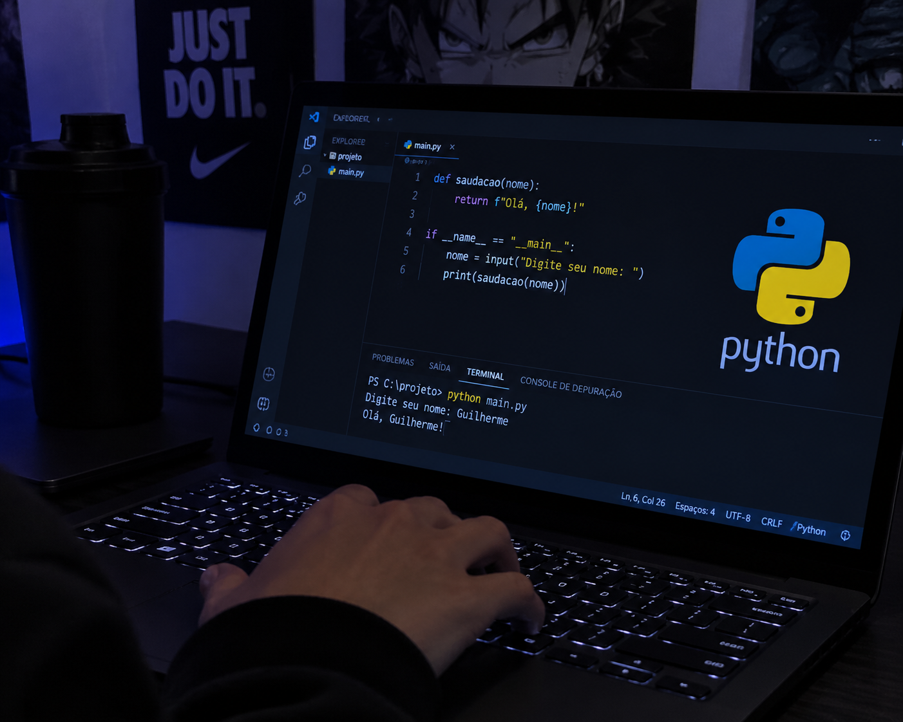
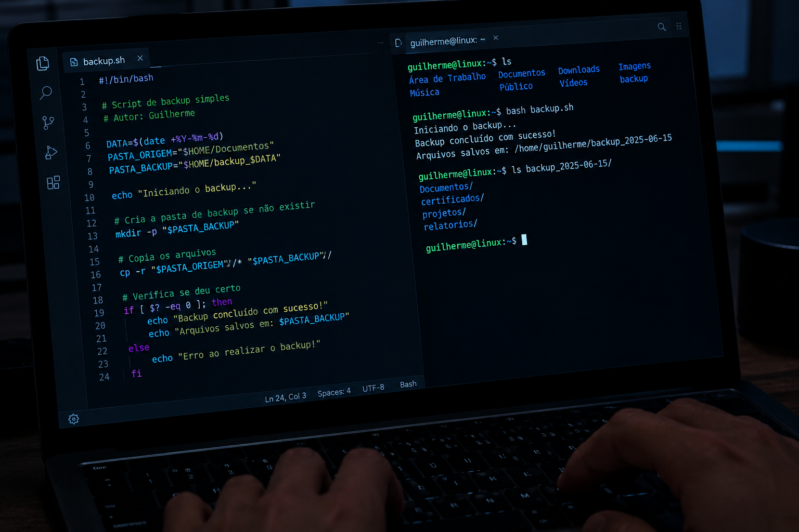

Minha Galeria de Projetos
Acompanhe visualmente as estruturas lógicas e as tecnologias utilizadas no desenvolvimento de rotinas automatizadas.

01. Lógica Condicional
Desenvolvimento de fluxos algoritmos estruturados utilizando estruturas de decisão (IF/ELSE) e loops de repetição para validação de dados.

02. Automação com Python
Criação de scripts limpos e modulares voltados para a manipulação automatizada de sistemas de arquivos e leitura de logs.

03. Scripts Bash & Terminal
Construção de rotinas executadas diretamente no prompt de comando (CLI), focadas em comandos estruturados e gerenciamento de tarefas.

04. Tratamento de Arquivos
Desenvolvimento de rotinas lógicas para ler, filtrar e organizar planilhas ou arquivos de texto automaticamente através de scripts.

05. Algoritmos de Repetição
Estudo focado em laços de repetição (FOR/WHILE) aplicados na varredura de dados estruturados e otimização de performance.

06. Funções e Escopo
Organização de códigos complexos divididos em funções reaproveitáveis, garantindo uma lógica limpa e de fácil manutenção.